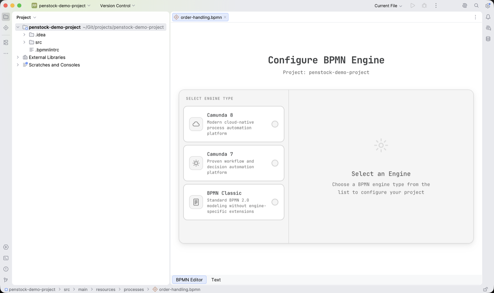

Getting started
Penstock installs from the JetBrains Marketplace, opens BPMN files in a diagram editor inside the IDE, and asks once per project which engine you are modelling for. This page covers the first few minutes after installing.

Requirements
| IDE | Any JetBrains IDE from 2025.2 |
| Marketplace listing | Penstock, id 25710. Published as Camunda BPMN Editor until 2026 |
| Licence | Commercial, with a 30-day trial |
| Engine profiles | Classic BPMN, Camunda 7, Camunda 8 |
The plugin has no free tier. Without a valid licence the diagram editor opens a panel reading A valid license is required to use Penstock. with a Buy License button that opens the IDE's licence registration dialog.
Install
-
Open the plugin manager
In the IDE, open Settings | Plugins and search the Marketplace for Penstock.
-
Install and restart
Install the plugin and restart the IDE when prompted.
-
Open a BPMN file
Open any
.bpmnfile from the Project view, or create one and paste a BPMN 2.0 definition into it.
After an update, Penstock posts a notification saying which version it updated to, with a What's new action that opens the bundled changelog in an editor tab.
Which files open in the editor
Penstock registers a file type called BPMN, described as a BPMN process definition file, for
the extensions bpmn and bpmn.xml, with XML as the underlying language.
Files of that type open in the diagram editor. The BPMN Project tool window is filled by a separate
scan, which collects files whose name ends in .bpmn or .bpmn20.xml. A file
named something.bpmn.xml opens in the diagram editor but is not listed there.
The diagram editor is registered ahead of the IDE's own editor rather than in place of it, so the plain XML editor stays available for the same file. The editor tabs at the bottom of the editor window switch between the diagram and the XML; the diagram tab is called BPMN Editor.
Changes made in the diagram are written back to the file itself as you make them. There is no separate save step for the diagram: the file is replaced atomically on each change, then refreshed in the IDE, so the XML tab and version control see the new content immediately.
Choosing the engine profile

The first time you open a BPMN file in a project that has no engine configured, the editor shows a setup page instead of the diagram. It is headed Configure BPMN Engine and names the project underneath.
The left side lists the three profiles:
| Camunda 8 | Modern cloud-native process automation platform |
| Camunda 7 | Proven workflow and decision automation platform |
| BPMN Classic | Standard BPMN 2.0 modeling without engine-specific extensions |
Selecting one fills the right side with whatever that profile can be configured with. Camunda 8 offers element templates. Camunda 7 offers a default script type. BPMN Classic shows the note No additional configuration required for Classic BPMN. Until a profile is selected the right side holds a placeholder and there is no save button, so choosing a profile is the only step this page requires. The bpmnlint paths are not set here; they are set in Settings | Tools | Penstock, described under Validation.
Save and Continue writes the configuration and loads the diagram. The choice is stored per project and the setup page does not appear again. You can change it later in Settings | Tools | Penstock, under Default BPMN engine.
The editor window
Once the profile is set, the editor is a toolbar across the top, the diagram canvas on the left, and the properties panel on the right. The properties panel can be collapsed and reopened from the toolbar.
The toolbar carries these actions, in this order:
| Reload Content | Reloads the editor |
| Undo | Undoes the last operation |
| Redo | Redoes the last operation |
| Copy | Copies the selected content |
| Paste | Pastes content |
| Auto Layout | Lays the diagram out again |
| Check | Opens the Check panel, which lists the layout problems in the diagram |
| Export | Opens the export dialog |
| Token Simulation | Toggles process execution simulation |
| Minimap | Toggles the minimap |
| Deploy | Opens the deployment dialog. Camunda 7 and Camunda 8 only |
| Marketplace | Opens the element templates marketplace. Camunda 8 only |
| Toggle Properties Panel | Shows or hides the properties panel |
Deploy and Marketplace are the only two that depend on the profile: Deploy appears for Camunda 7 and Camunda 8, Marketplace only for Camunda 8. Under Classic BPMN neither is present.
The buttons show icons only by default. To see their names as well, tick Show text labels on toolbar buttons in Settings | Tools | Penstock.
The BPMN Project tool window
Penstock adds a tool window called BPMN Project, anchored to the left. It lists every BPMN file in the project under a root node named after the project, and shows the configured engine beside each file in grey. Nothing is listed until an engine has been chosen.
Its toolbar has three actions: Sync Changes, which rebuilds the list; View as Tree, a toggle between the directory structure and a flat list; and BPMN Project Settings, which opens the settings page. The list also refreshes by itself when a BPMN file in the project is added, changed or removed.
Expanding a file gives a short list of actions, each run by double-clicking it or pressing Enter:
- Open the diagram in the editor.
- Copy the process id of the first process in the file to the clipboard. Camunda 7 and Camunda 8 only.
- Run bpmnlint on the file. Only when all three lint paths are configured.
- Open the diagram and its auto layout preview, a read-only tab titled Auto Layout: followed by the file name without its extension.
Where to go next
- Engine profiles — what each of the three profiles changes.
- Editing a diagram — the canvas, the properties panel and the XML.
- Element templates — loading connector templates for Camunda 8.
- Validation — setting up bpmnlint against the project's own rules.
- Deployment — deploying to Camunda 7 or Camunda 8.
- Auto layout — the layout engine and its preview.
- Settings and project files — what is stored, and where.
- Troubleshooting — when the editor does not load.